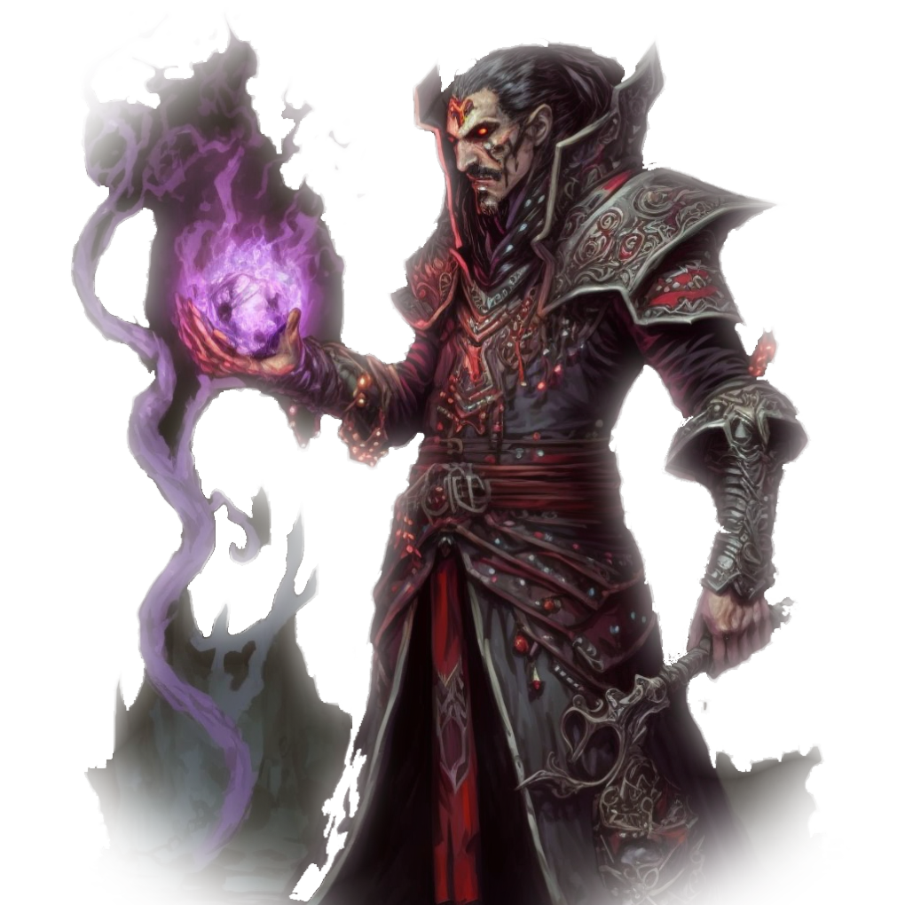
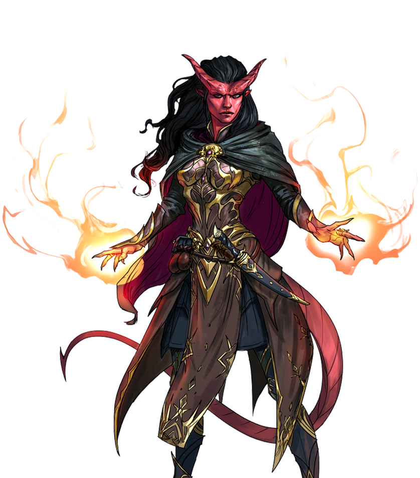

Bruxo (Warlock)

Com um pseudodragão enrolado em seu ombro, um jovem elfo vestindo robes dourados sorri calorosamente, tecendo um charme mágico através de suas doces palavras e dobrando a sentinela do palácio como deseja.
A medida que chamas ganham vida em suas mãos, um mirrado humanos sussurra o nome secreto do seu patrono demoníaco, infundindo sua magia com poder abissal.
Olhando, ora para um tomo surrado, ora para o alinhamento incomum das estrelas acima, um tiefling de olhos selvagens profere o ritual místico que abrirá uma passagem para um mundo distante.
Os bruxos são desbravadores do conhecimento que existe escondido no tecido do multiverso. Através de pactos feitos com seres misteriosos detentores de poder sobrenatural, os bruxos desbloqueiam efeitos mágicos tão sutis quanto espetaculares. Extraindo o conhecimento antigo de seres como nobres fadas, demônios, diabos, bruxas e entidades alienígenas do Reino Distante, os bruxos remontam segredos arcanos para aprimorar seus próprios poderes.
Juramento e Dívida:
Um bruxo é definido por um pacto com uma entidade transcendental. Às vezes o relacionamento entre um bruxo e seu patrono é como o de um clérigo com sua divindade, apesar de os seres que servem como patronos para os bruxos não serem deuses. Um bruxo poderia liderar um culto dedicado a um príncipe-demônio, um arquidemônio ou uma entidade completamente alienígena –seres que, normalmente, não são servidos por clérigos.
Muitas vezes, porém, esse arranjo é mais similar ao realizado entre um mestre e seu aprendiz. O bruxo aprende e aumenta seu poder, ao custo de serviços ocasionais realizados em nome do seu patrono.
A magia outorgada ao bruxo varia de pequenas, mas duradouras alterações à pessoa do bruxo (tais como a habilidade de ver no escuro ou de ler qualquer idioma) até o acesso a poderosas magias. Diferente dos magos, os bruxos suplementam sua magia com facilidade em combate. Eles se sentem confortáveis em armaduras leves e sabem usar armas simples.
Quando um pacto é selado, a sede de conhecimento e poder do bruxo não pode ser saciada com mero estudo e pesquisa. Ninguém faz um pacto com uma entidade tão poderosa se não deseja usar esse poder atrás de benefícios. Em vez disso, a grande maioria dos bruxos gastam seus dias em uma perseguição desenfreada por seus objetivos, que normalmente os leva a algum tipo de aventura. Além disso, as demandas de seus patronos também leva os bruxos a se aventurar.
Escavando Segredos:
Os bruxos são guiados por um insaciável desejo por conhecimento e poder, que os compele aos seus pactos e molda suas vidas. Essa sede leva os bruxos a fazerem seus pactos e também molda suas carreiras.
Histórias de bruxos criando elos com corruptores são vastamente conhecidos. Porém, muitos bruxos servem patronos que não são abissais. Algumas vezes um viajante na floresta chega a uma estranhamente bela torre, conhece seu senhor ou senhora feérico e acaba por fazer um pacto sem ter total ciência disso. E, as vezes, enquanto vasculha em tomos de conhecimento proibido, a mente brilhante, porem enlouquecida de um estudante é levada a realidades além do mundo material em direção a seres alienígenas habitantes do vazio exterior.
Criando um Bruxo:
A medida que você cria seu personagem bruxo, gaste algum tempo pensando em seu patrono e as obrigações impostas pelo pacto que você fez. O que levou você a fazer o pacto e, como você fez contato com seu patrono? Você foi seduzido a invocar um diabo ou você estava em busca do ritual que permitia a você fazer contato com um antigo deus alienígena? Foi você que buscou por seu patrono ou foi seu patrono que escolheu você? Você realiza as obrigações do seu pacto a contragosto ou serve alegremente antes mesmo de receber as recompensas prometidas a você?
Trabalhe com seu Mestre para determinar o papel que seu pacto terá na carreira de aventura de seu personagem. As exigências do seu patrono podem levá-lo a aventuras ou podem consistir inteiramente em pequenos favores que você pode fazer entre as aventuras.
Que tipo de relacionamento você tem com seu patrono? É amigável, antagônico, inquieto ou romântico? Quão importante seu patrono considera você? Que papel você desempenha nos planos do seu patrono? Você conhece outros servos do seu patrono?
Como seu patrono se comunica com você? Se você tiver um familiar, ele poderá ocasionalmente falar com a voz do seu patrono. Alguns feiticeiros encontram mensagens de seus patronos gravadas em árvores, misturadas entre folhas de chá ou à deriva nas nuvens – mensagens que somente o feiticeiro pode ver. Outros bruxos conversam com seus patronos em sonhos ou visões despertas, ou lidam apenas com intermediários.
Tabela do Bruxo:
| Nível | Bônus de Proficiência | Benefícios | Truques Conhecidos | Feitiços Conhecidos | Espaços de Feitiço | Nível dos Espaços | Invocações Conhecidas |
|---|---|---|---|---|---|---|---|
| 1st | +2 | Patrono do Outro Mundo, Pacto Mágico | 2 | 2 | 1 | 1º | - |
| 2nd | +2 | Invocações Sobrenaturais | 2 | 3 | 2 | 1º | 2 | 3rd | +2 | Dádiva do Pacto | 2 | 4 | 2 | 2º | 2 |
| 4th | +2 | Melhoria na pontuação de habilidade | 3 | 5 | 2 | 2º | 2 |
| 5th | +3 | - | 3 | 6 | 2 | 3º | 3 |
| 6th | +3 | Recurso de Patrono do Outro Mundo | 3 | 7 | 2 | 3º | 3 |
| 7th | +3 | - | 3 | 8 | 2 | 4º | 4 |
| 8th | +3 | Melhoria na pontuação de habilidade | 3 | 9 | 2 | 4º | 4 |
| 9th | +4 | - | 3 | 10 | 2 | 4º | 4 |
| 10th | +4 | Recurso de Patrono do Outro Mundo | 4 | 10 | 2 | 5º | 5 |
| 11th | +4 | Arcano Místico (6º Nível) | 4 | 11 | 3 | 5º | 5 |
| 12th | +4 | Melhoria na pontuação de habilidade | 4 | 11 | 3 | 5º | 6 |
| 13th | +5 | Arcano Místico (7º Nível) | 4 | 12 | 3 | 5º | 6 |
| 14th | +5 | Recurso de Patrono do Outro Mundo | 4 | 12 | 3 | 5º | 6 |
| 15th | +5 | Arcano Místico (8º Nível) | 4 | 13 | 3 | 5º | 7 |
| 16th | +5 | Melhoria na pontuação de habilidade | 4 | 13 | 3 | 5º | 7 |
| 17th | +6 | Arcano Místico (9º Nível) | 4 | 14 | 4 | 5º | 7 |
| 18th | +6 | - | 4 | 14 | 4 | 5º | 8 |
| 19th | +6 | Melhoria na pontuação de habilidade | 4 | 15 | 4 | 5º | 8 |
| 20th | +6 | Mestre Místico | 4 | 15 | 4 | 5º | 8 |
Recursos de Classe:
Como um Bruxo, você recebe os seguintes recursos de classe.
Hit Points
Hit Dice: 1d8 por nível de classe.
Hit Points no nível 1: 8 + seu modificador de constituição.
Hit nos níveis mais altos: 1d8(ou 5) + seu modificador constituição por nível de classe após o primeiro nível.
Proficiências
Armadura: Armadura leve.
Armas: Armas simples.
Ferramentas: Nenhuma.
Salvaguardas: Sabedoria, Carisma.
Habilidades: Escolha duas entre Arcanismo, Enganação, História, Intimidação, Investigação, Natureza . Religião.
Equipamento
Você começa com os seguintes equipamentos, somados aos equipamentos garantidos pelo seu background (antecedentes).
(a) uma Besta Leve e 20 virotes ou (b) qualquer arma simples.
(a) uma bolsa de componentes ou (b) um foco arcano.
(a) um pacote do estudioso ou (b) um pacote do explorador, armadura de couro, qualquer arma simples e duas adagas.
Patrono Transcedental
No 1° nível, você conclui uma barganha com um ser transcendental, à sua escolha: a Arquifada, o Corruptor ou o Grande Antigo, cada um deles é detalhado no final da descrição da classe. Sua escolha lhe confere traços no 1° nível e novamente no6°, 10° e 14° nível.
Magia de Pacto
Sua pesquisa arcana e a magia outorgada a você por seu patrono, lhe concedem uma gama de magias. Veja o Regras de Conjuração para as regras gerais de conjuração e o Lista de Magias para a lista de magias de bruxo.
Truques
Você conhece dois truques, à sua escolha, da lista de magias de bruxo. Você aprende truques de bruxo adicionais, à sua escolha, em níveis mais altos, como mostrado na coluna Truques Conhecidos da tabela O Bruxo.
Espaços de Magia
A tabela O Bruxo mostra quantos espaços de magia você possui. A tabela também mostra qual o nível desses espaços; todos os seus espaços de magia são do mesmo nível. Para conjurar uma magia de bruxo de 1° nível ou superior, você deve gastar uma espaço de magia. Você recobra todos os espaços de magia gastos quando você completa um descanso curto ou longo.
Por exemplo, quando você atingir o 5° nível, você terá dois espaços de magia de 3° nível. Para conjurar a magia de 1° nível onda trovejante, você deve gastar um desses espaços e você a conjura como uma magia de 3° nível.
Magias Conhecidas de 1º Nível e Superiores
No 1° nível, você conhece duas magias de 1° nível, à sua escolha da lista de magias de bruxo.
A coluna Magias Conhecidas na tabela O Bruxo mostra quando você aprende mais magias de bruxo, à sua escolha, de 1° nível ou superior. Cada uma dessas magias deve ser de um nível a que você tenha acesso, como mostrado na tabela na coluna de Nível de Magia para o seu nível. Quando você alcança o 6° nível, por exemplo, você aprende uma nova magia de bruxo, que pode ser de 1°, 2° ou 3° nível.
Além disso, quando você adquire um nível nessa classe, você pode escolher uma magia de bruxo que você conheça e substituí-la por outra magia da lista de magias de bruxo, que também deve ser de um nível ao qual você tenha espaços de magia.
Habilidade de Conjuração
Sua habilidade de conjuração é Carisma para suas magias de bruxo, portanto, você usa seu Carisma sempre que alguma magia se referir à sua habilidade de conjurar magias. Além disso, você usa o seu modificador de Carisma para definir a CD dos testes de resistência para as magias de bruxo que você conjura e quando você realiza uma jogada de ataque com uma magia.
CD para suas magias = 8 + bônus de proficiência +seu modificador de Carisma
Modificador de ataque de magia = seu bônus de proficiência + seu modificador de Carisma.
Foco de Conjuração
Você pode usar um foco arcano (encontrado no Equipamento de Aventureiro) como foco de conjuração das suas magias de bruxo.
Invocações Místicas
Durante seus estudos sobre conhecimento oculto, você descobriu as invocações místicas, fragmentos de conhecimento proibido que infundiram você com habilidade mágica permanente.
No 2° nível, você ganha duas invocações místicas, à sua escolha. Suas opções de invocação estão detalhadas no final da descrição dessa classe. Quando você atinge certos nível de bruxo, você adquire novas invocações à sua escolha, como mostrado na coluna Invocações Conhecidas na tabela O Bruxo.
Além disso, quando você adquire um novo nível nessa classe, você pode escolher uma invocação que você conheça e substituí-la por outra invocação que você possa aprender nesse nível.
Dádiva do Pacto
No 3° nível, seu patrono transcendental lhe confere um dom por seus leais serviços. Você adquire uma das características a seguir, à sua escolha.
Pacto da Corrente
Você aprende a magia convocar familiar e pode conjurá-la como um ritual. Essa magia não conta no número de magias que você conhece.
Quando você conjura essa magia, você pode escolher uma das formas convencionais para o seu familiar ou uma das seguintes formas especiais: diabrete, pseudodragão, quasit ou sprite.
Além disso, quando você realiza a ação de Ataque, você pode renunciar s um dos seus ataques para permitir que seu familiar realize um ataque, com a reação dele.
Pacto da Lâmina
Você pode usar sua ação para criar uma arma de pacto em sua mão vazia. Você escolhe a forma que essa arma corpo-a-corpo tem a cada vez que você a cria (veja as opções de arma no capítulo 5). Você é proficiente com ela enquanto a empunhar. Essa arma conta como sendo mágica com os propósitos de ultrapassar resistência e imunidade a ataques e danos não-mágicos.
Sua arma de pacto desaparece se ela estiver a mais de 1,5 metro de você por 1 minuto ou mais. Ela também desaparece se você usar essa característica novamente, se você dissipar a arma (não requer ação) ou se você morrer.
Você pode transformar uma arma mágica em sua arma de pacto ao realizar um ritual especial enquanto empunha a arma. Você precisa de 1 hora para concluir o ritual, que pode ser realizado durante um descanso curto. Você pode dissipar a arma, guardando-a em um espaço extradimensional, e ela reaparece toda vez que você criar sua arma de pacto. A arma deixa de ser sua arma de pacto se você morrer, se você realizar um ritual de 1 hora com outra arma diferente ou se você realizar um ritual de 1 hora para romper seu elo com ela. A arma aparece aos seus pés se ela estiver no espaço extradimensional quando o elo for quebrado.
Pacto do Tomo
Seu patrono lhe deu um grimório chamado Livro das Sombras. Quando você adquire essa característica, escolha três truques da lista de magias de qualquer classe. Enquanto o livro estiver com você, você poderá conjurar esses truques à vontade. Eles não contam no número de truques que você conhece. Esses truques são considerados magias de bruxo para você e não precisam ser da mesma lista de magia.
Se você perder seu Livro das Sombras, você pode realizar uma cerimônia de 1 hora para receber um substituto do seu patrono. Essa cerimônia pode ser realizada durante um descanso curto ou longo e destrói o livro anterior. O livro se torna cinzas quando você morre.
Incremento no Valor de Habilidade
Quando você atinge o 4° nível e novamente no 8°, 12°, 16° e 19° nível, você pode aumentar um valor de habilidade, à sua escolha, em 2 ou você pode aumentar dois valores de habilidade, à sua escolha, em 1. Como padrão, você não pode elevar um valor de habilidade acima de 20 com essa característica.
Arcana Mística
VNo 11° nível, seu patrono confere a você um segredo mágico conhecido como arcana. Escolha uma magia de 6° nível da lista de magias de bruxo como sua arcana.
Você pode conjurar essa magia arcana uma vez sem gastar um espaço de magia. Você deve terminar um descanso longo antes de poder fazer isso novamente.
Em nível altos, você adquire mais magias de bruxo de sua escolha que podem ser conjuradas dessa forma: uma magia de 7° nível no 13° nível, uma magia de 8° nível no 15° nível e uma magia de 9° nível no 17° nível. Você recupera todos os usos de sua Arcana Mística quando você termina um descanso longo.
Mestre Místico:
No 20° nível, você pode recarregar sua reserva interior de poder místico quando suplicar ao seu patrono para recuperar espaços de magia gastos. Você pode gastar 1 minuto suplicando pela ajuda do seu patrono para recuperar todos os espaços de magia gastos da sua característica Magia de Pacto. Uma vez que você recuperou espaços de magia com essa característica, você deve terminar um descanso longo antes de fazê-lo novamente.
"SUA DÁDIVA DO PACTO
Cada opção de Dádiva do Pacto produz uma criatura ou objeto especial que reflete a natureza do seu patrono. Pacto da Corrente. Seu familiar é mais esperto que um familiar típico. Sua forma padrão pode ser reflexo do seu patrono, com sprites e pseudodragões vinculados à Arquifada e diabretes e quasits vinculados ao Corruptor. Devido à natureza inescrutável do Grande Antigo, qualquer familiar é aceitável para ele. Pacto da Lâmina. Se o seu patrono for a Arquifada, sua arma deveria ser uma lâmina fina entalhada com frondosas videiras.
Se você serve o Corruptor, sua arma poderia ser um machado feito de metal negro e adornado com chamas decorativas. Se o seu patrono for o Grande Antigo, sua arma deveria ser uma lança de aparência antiga, com gemas encrustadas na sua ponta, esculpida para se parecer com um terrível olho aberto. Pacto do Tomo.
Seu Livro das Sombras deveria ser um tomo elegante com adornos em suas pontas e repleto de magias de encantamento e ilusão dado a você nobremente pela Arquifada. Ele poderia ser um tomo pesado costurado com couro de demônio e cravado com ferro, contendo magias de conjuração e rico em conhecimento proibido sobre regiões sinistras do cosmos, um presente do Corruptor. Ou poderia ser um diário esfarrapado de um lunático que enlouqueceu ao contatar o Grande Antigo, contendo restos de magias que apenas sua insanidade crescente permite que você as entenda e conjure."
Patronos Transcedentais:
Os seres que servem os bruxos como seus patronos são poderoso habitantes de outros planos de existência – não são deuses, mas tem poderes praticamente divinos. Vários patronos concedem aos seus bruxos acesso a diferentes poderes e invocações, e esperam favores significativos em troca.
Alguns patronos reúnem bruxos, distribuindo conhecimento místico praticamente de graça ou gabam-se de sua habilidade de controlar os mortais a sua vontade. Outros patronos concedem seus poderes apenas a contragosto e farão um pacto apenas com um bruxo. Bruxos que servem o mesmo patrono devem ver um ao outro como aliados, irmãos ou rivais.
A Arquifada
Seu patrono é um senhor ou senhora das fadas, uma criatura lendária que detém segredos que foram esquecidos antes das raças mortais nascerem. As motivações desses seres são, muitas vezes, inescrutáveis e, as vezes, excêntricas e podem envolver esforços para adquirir grandes poderes mágicos ou resolução de desavenças antigas. Incluem-se dentre esses seres o Príncipe do Frio; a Rainha do Ar e Trevas, regente da Corte do Crepúsculo; Titania da Corte do Verão; seu cônjuge, Oberon, o Senhor Verdejante; Hyrsam, o Príncipe dos Tolos; e bruxas antigas.
Lista de Magia Expandida
A Arquifada permite que você escolha magias de uma lista expandida quando você for aprender magias de bruxo. As seguintes magias são adicionadas a sua lista de magias de bruxo.
| Magias Expandidas da Arquifada | ||
|---|---|---|
| Nível | Magias | |
| 1º | Fogo das Fadas | sono |
| 2º | Acalmar Emoções | Força Fantasmagórica |
| 3º | Piscar | Ampliar Plantas |
| 4º | Dominar Besta | Invisibilidade Maior |
| 5º | Dominar Pessoa | Similaridade |
Presença Feérica
A partir do 1° nível, seu patrono concede a você a habilidade de projetar a sedução e temeridade da presença da fada. Com uma ação, você pode fazer com que cada criatura num cubo de 3 metros centrado em você, faça um teste de resistência de Sabedoria com uma CD igual a de sua magia de bruxo. As criaturas que falharem no teste ficaram enfeitiçadas ou amedrontadas por você (à sua escolha) até o início do seu próximo turno.
Quando você usar essa característica, você não poderá utilizá-la novamente antes de realizar um descanso curto ou longo.
Névoa de Fuga
A partir do 6° nível, você pode desaparecer em uma lufada de névoa em resposta a alguma ofensa. Quando você sofrer dano, você pode usar sua reação para ficar invisível e se teletransportar a até 18 metros para um espaço desocupado que você possa ver. Você permanece invisível até o início do seu próximo turno ou até realizar um ataque ou conjurar uma magia.
Após usar essa características, você não poderá utilizá-la novamente até terminar um descanso curto ou longo.
Defeza Sedutora
A partir do 10° nível, seu patrono ensina você como voltar as magias de efeito mental dos seus inimigos contra eles. Você não pode ser enfeitiçado e, quando outra criatura tenta enfeitiçá-lo, você pode usar sua reação para tentar reverter o encanto de volta aquela criatura. A criatura deve ser bem sucedida num teste de resistência de Sabedoria contra a CD da sua magia de bruxo ou ficara enfeitiçado por 1 minuto ou até a criatura sofrer dano.
Delírio Sombrio
Começando no 14° nível, você pode imergir uma criatura num reino ilusório. Com um ação, escolha uma criatura que você possa ver a até 18 metros de você. Ela deve ser bem sucedida num teste de resistência de Sabedoria contra a CD da sua magia de bruxo. Se ela falhar, ela ficará enfeitiçada ou amedrontada por você (à sua escolha) por 1 minuto ou até você quebrar sua concentração (como se você estivesse se concentrando em uma magia). Esse efeito termina prematuramente se a criatura sofrer dano.
Até que essa ilusão termine, a criatura acredita que está perdida num reino enevoado, a aparência desse reino fica a seu critério. A criatura só pode ver e ouvir a si mesma, a você e a sua ilusão.
Você deve terminar um descanso curto ou longo antes de poder usar essa característica novamente.
O Corruptor
Você realizou um pacto com um corruptor dos planos de existência inferiores, um ser cujos objetivos são o mal, mesmo se você se opor a esses objetivos. Tais seres desejam corromper ou destruir todas as coisas, em última análise, até mesmo você. Corruptores poderosos o bastante para forjar pactos incluem lordes demônios como Demogorgon, Orcus, Fraz’Urb-luu e Bafomé; arquidiabos como Asmodeus, Dispater, Mefistófeles e Belial; senhores das profundezas e balors que sejam excepcionalmente poderosos; e ultraloths e outros senhores dos yugoloths.
Lista de Magia Expandida
O Corruptor permite que você escolha magias de uma lista expandida quando você for aprender magias de bruxo. As seguintes magias são adicionadas a sua lista de magias de bruxo.
| Magias Expandidas do Corruptor | ||
|---|---|---|
| Nível | Magias | |
| 1º | Mãos Flamejantes | Controlar |
| 2º | Cegueira, Surdez | Raio Ardente |
| 3º | Bola de Fogo | Névoa Fétida |
| 4º | Escudo de Fogo | Muralha de Fogo |
| 5º | Coluna de Chamas | Consagrar |
Benção do Obscuro
A partir do 1° nível, quando você reduzir uma criatura hostil a 0 pontos de vida, você ganha uma quantidade de pontos de vida temporários igual ao seu modificador de Carisma + seu nível de bruxo (mínimo 1).
Sorte do Próprio Obscuro
A partir do 6° nível, você pode pedir ao seu patrono para alterar o destino em seu favor. Quando você realizar um teste de habilidade ou um teste de resistência, você pode usar essa característica para adicionar 1d10 a sua jogada. Você pode fazer isso após ver sua jogada inicial, mas antes que qualquer efeito da jogada ocorra.
Após usar essa características, você não poderá utilizá-la novamente até terminar um descanso curto ou longo.
Resistência Demoníaca
A partir do 10° nível, você pode escolher um tipo de dano quando você terminar um descanso curto ou longo. Você adquire resistência contra esse tipo de dano até você escolher um tipo de dano diferente com essa característica. Dano causado por armas mágicas ou armas de prata ignoram essa resistência.
Lançar no Inferno
A partir do 14° nível, quando você atingir uma criatura com um ataque, você pode usar essa característica para, instantaneamente, transportar o alvo para os planos inferiores. A criatura desaparece e é jogada para um lugar similar a um pesadelo.
No final do seu turno, o alvo retorna ao lugar que ela ocupava anteriormente, ou para o espaço desocupado mais próximo. Se o alvo não for um corruptor, ele sofre 10d10 de dano psíquico à medida que toma conta da experiência traumática.
Após usar essa características, você não poderá utilizá-la novamente até terminar um descanso curto ou longo.
O Grande Antigo
Seu patrono é uma entidade misteriosa cuja natureza é profundamente alheia ao tecido da realidade. Ela deve ter vindo do Reino Distante, o espaço além da realidade, ou ela pode ser um dos deuses anciãos conhecido apenas nas lendas. Seus motivos são incompreensíveis para os mortais e seu conhecimento é tão imenso e antigo que, até mesmo, as mais grandiosas bibliotecas desbotam em comparação com os vastos segredos que ele detém. O Grande Antigo pode desconhecer a sua existência ou ser totalmente indiferente a você, mas os segredos que você desvendou permitem que você obtenha suas magias dele.
Entidades desse tipo incluem Ghaunadar, conhecido como Aquele que Espreita; Tharizdun, o Deus Acorrentado; Dendar, a Serpente da Noite; Zargon, o Retornado; Grande Cthulhu; entre outros seres insondáveis.
Lista de Magia Expandida
O Grande Antigo permite que você escolha magias de uma lista expandida quando você for aprender magias de bruxo. As seguintes magias são adicionadas a sua lista de magias de bruxo.
| Magias Expandidas do Grande Antigo | ||
|---|---|---|
| Nível | Magias | |
| 1º | Sussurros Dissonantes | Riso Histérico de Tasha |
| 2º | Detectar Pensamentos | Força Fantasmagórica |
| 3º | Clarividência | Enviar Mensagem |
| 4º | Dominar Besta | Tentáculos Negros de Evard |
| 5º | Dominar Pessoa | Telecinésia |
Despertar a Mente
A partir do 1° nível, seu conhecimento alienígena concede a você a habilidade de tocar a mente de outras criaturas. Você pode se comunicar telepaticamente com qualquer criatura que você possa ver a até 18 metros de você. Você não precisa partilhar um idioma com a criatura para compreender suas expressões telepáticas, mas a criatura deve ser capaz de compreender pelo menos um idioma.
Proteção Entrópica
A partir do 6° nível, você aprende a se proteger magicamente contra ataques e a transformar os ataques mal sucedidos de seus inimigos em boa sorte pra você. Quando uma criatura realizar uma jogada de ataque contra você, você pode usar sua reação para impor desvantagem nesse jogada. Se o ataque errar você, sua próxima jogada de ataque contra essa criatura recebe vantagem se você o fizer antes do final do seu próximo turno.
Após usar essa características, você não poderá utilizá-la novamente até terminar um descanso curto ou longo.
Escudo de Pensamentos
A partir do 10° nível, seus pensamentos não podem ser lidos através de telepatia ou outros meios, a não ser que você permita. Você também adquire resistência a dano psíquico e, toda vez que uma criatura causar dano psíquico a você, essa criatura sofre a mesma quantidade de dano que você sofreu.
Criar Lacaio
No 14° nível, você adquire a habilidade de infectar a mente de um humanoide com a magia alienígena do seu patrono. Você pode usar sua ação para tocar um humanoide incapacitado. Essa criatura então, ficará enfeitiçada por você até que a magia remover maldição seja conjurada sobre ela, a condição enfeitiçado seja removida dela ou você use essa característica novamente.
Você pode se comunicar telepaticamente com a criatura enfeitiçada contanto que ambos estejam no mesmo plano de existência.
Invocações Místicas
Se uma invocação mística tiver pré-requisitos, você deve possuí-los para que possa aprendê-la. Você pode aprender a invocação ao mesmo tempo que adquire os pré-requisitos dela. O pré-requisito de nível nas invocações se refere ao nível de bruxo, não ao nível de personagem.
Armadura de Sombras
Você pode conjurar armadura arcana em si mesmo, à vontade, sem precisar gastar um espaço de magia ou componentes materiais.
Correntes de Carceri
Pré-requisito: 15° nível, característica Corrente de Cárceri
Você pode conjurar imobilizar monstro, à vontade – tendo como alvo um celestial, corruptor ou elemental – sem precisar gastar um espaço de magia ou componentes materiais. Você deve terminar um descanso longo antes de poder usar essa invocação na mesma criatura novamente.
Encharcar a Mente
Pré-requisito: 5° nível
Você pode conjurar lentidão, uma vez, usando um espaço de magia de bruxo. Você não pode fazer isso novamente até terminar um descanso longo.
Escultor de Carne
Pré-requisito: 7° nível
Você pode conjurar metamorfose, uma vez, usando um espaço de magia de bruxo. Você não pode fazer isso novamente até terminar um descanso longo.
Explosão Agonizante
Pré-requisito: truque rajada mística
Quando você conjura rajada mística, adicione seu modificador de Carisma ao dano causado quando atingir.
Explosão Repulsiva
Pré-requisito: truque rajada mística
Quando você atingir uma criatura com uma rajada mística, você pode empurrar a criatura até 3 metros para longe de você em linha reta.
Idioma Bestial
Você pode conjurar falar com animais, à vontade, sem precisar gastar um espaço de magia.
Influência Enganadora
Você ganha proficiência nas perícias Enganação e Persuasão.
Lacaios do Caos
Pré-requisito: 9° nível
Você pode lançar conjurar elemental, uma vez, usando um espaço de magia de bruxo. Você não pode fazer isso novamente até terminar um descanso longo.
Lâmina Sedenta
Pré-requisito: 5° nível, característica Pacto da Lâmina
Você pode atacar com sua arma do pacto duas vezes, ao invés de apenas uma, quando você usa a ação de Ataque no seu turno.
Lança Mística
Pré-requisito: truque rajada mística
Quando você conjura rajada mística, seu alcance será de 90 metros.
Larápio dos Cinco Destinos
Você pode conjurar perdição, uma vez, usando um espaço de magia de bruxo. Você não pode fazer isso novamente até terminar um descanso longo.
Livro de Segredos Antigos
Pré-requisito: Característica Pacto do Tomo
Você pode agora, registrar rituais mágicos no seu Livro das Sombras. Escolha duas magias de 1° nível que possuam o descritor ritual da lista de magias de qualquer classe. A magia aparece no livro e não conta no número de magias que você conhece. Com o seu Livro das Sombras em mãos, você pode conjurar as magias escolhidas como rituais. Você não pode conjurar essas magias, exceto na forma de rituais, a não ser que você tenha aprendido elas através de outros meios. Você também pode conjurar uma magia de bruxo que você conheça como ritual se ela possuir o descritor ritual. Os rituais não precisam ser da mesma lista de magias.
Durante suas aventuras, você pode adicionar outras magias de ritual ao seu Livro das Sombras. Quando você encontrar tais magias, você pode adicioná-la ao livro se o nível da magia for igual ou inferior à metade do seu nível de bruxo (arredondado para baixo) e se você tiver tempo para gastar transcrevendo a magia. Para cada nível da magia, o processo de transcrição levará 2 horas e custará 50 po, devido às tintas raras necessárias para inscrevê-la.
Máscara das Muitas Faces
Você pode conjurar disfarçar-se, à vontade, sem precisar gastar um espaço de magia.
Mestre das Infindáveis Formas
Pré-requisito: 15° nível
Você pode conjurar alterar-se, à vontade, sem precisar gastar um espaço de magia.
Olhar de Duas Mentes
Você pode usar sua ação para tocar um humanoide voluntário e perceber através do seus sentidos até o final do seu próximo turno. Conquanto que a criatura esteja no mesmo plano de existência que você, você pode usar sua ação nas rodadas subsequentes para manter a conexão, estendendo a duração até o início do seu próximo turno. Enquanto estiver percebendo através dos sentidos de outra criatura, você aproveita os benefícios de todos os sentidos especiais possuídos pela criatura e você fica cego e surdo ao que está a sua volta.
Olhos do Guardião das Runas
Você pode ler todas as escritas.
Palavra Terrível
Pré-requisito: 7° nível
Você pode conjurar confusão, uma vez, usando um espaço de magia de bruxo. Você não pode fazer isso novamente até terminar um descanso longo.
Passo Ascendente
Pré-requisito: 9° nível
Você pode conjurar levitação em si mesmo, à vontade, sem precisar gastar um espaço de magia ou componentes materiais.
Salto Transcedental
Pré-requisito: 9° nível
Você pode conjurar salto em si mesmo, à vontade, sem precisar gastar um espaço de magia ou componentes materiais.
Sinal de Mau Agouro
Pré-requisito: 5° nível
Você pode conjurar rogar maldição, uma vez, usando um espaço de magia de bruxo. Você não pode fazer isso novamente até terminar um descanso longo.
Sorvedor de Vida
Pré-requisito: 12° nível, característica Pacto da Lâmina
Quando você atingir uma criatura com sua arma do pacto, a criatura sofre uma quantidade de dano necrótico adicional igual ao seu modificador de Carisma (mínimo 1).
Sussurros da Sepultura
Pré-requisito: 9° nível
Você pode conjurar falar com os mortos, à vontade, sem precisar gastar um espaço de magia.
Sussurros Sedutores
Pré-requisito: 7° nível
Você pode conjurar compulsão, uma vez, usando um espaço de magia de bruxo. Você não pode fazer isso novamente até terminar um descanso longo.
Uno com as Sombras
Pré-requisito: 5° nível
Quando você estiver em uma área de penumbra ou escuridão, você pode usar sua ação para ficar invisível até se mover ou realizar uma ação ou reação.
Vigor Abissal
Você pode conjurar vitalidade falsa em si mesmo, à vontade, como uma magia de 1° nível, sem precisar gastar um espaço de magia ou componentes materiais.
Visão da Bruxa
Pré-requisito: 15° nível
Você pode ver a verdadeira forma de qualquer metamorfo ou criatura oculta através de magias de ilusão ou transmutação contanto que a criatura esteja a até 9 metros de você e você tenha linha de visão.
Visão Diabólica
Você pode ver normalmente na escuridão, tanto mágica quanto normal, com um alcance de 36 metros.
Visão Mística
Você pode conjurar detectar magia, à vontade, sem precisar gastar um espaço de magia.
Visões de Reinos Distantes
Pré-requisito: 15° nível
Você pode conjurar olho arcano, à vontade, sem precisar gastar um espaço de magia.
Visões nas Brumas
Você pode conjurar imagem silenciosa, à vontade, sem precisar gastar um espaço de magia ou componentes materiais.
Voz do Mestre das Correntes
Pré-requisito: Característica Pacto da Corrente
Você pode se comunicar telepaticamente com seu familiar e perceber através dos sentidos do seu familiar enquanto ambos estiverem no mesmo plano de existência. Além disso, enquanto estiver percebendo através dos sentidos do seu familiar, você também poderá falar através dele com a sua voz, mesmo que seu familiar, normalmente, seja incapaz de falar.